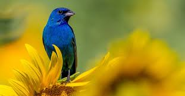
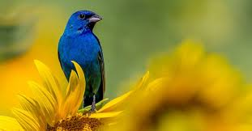
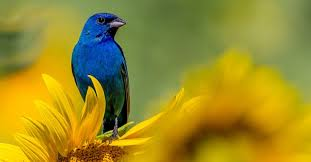
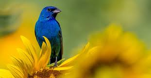

We often think of birds as eating seeds and fruits — it’s what they come to our yards for after all — but many birds also rely on insects for a large part of their nutrition. It’s this part of their diet that does us a big favor in the form of free pest control.
By eating insects, birds help keep the bug populations from becoming too large, so having them nearby is a good thing. All told, birds eat between 450 million tons and 550 million tons of insects each year, USA Today reports(Opens in a new window). While this helps us around our homes and neighborhoods, it’s also a boon to farmers as well, assisting to control agricultural pests.
It’s not just insect-eating birds we owe a debt of gratitude to. Many raptors — owls, hawks, eagles and falcons — are at the top of the food chain and help keep the ecosystem in balance through their regular hunting activities, according to the Missouri Department of Conservation(Opens in a new window). Without them, our environment could become overpopulated with some of the creatures they frequently hunt, namely rodents and other small mammals.
Aves and a sister group, the order Crocodilia, contain the only living representatives of the reptile clade Archosauria. During the late 1990s, Aves was most commonly defined phylogenetically as all descendants of the most recent common ancestor of modern birds and Archaeopteryx lithographica.[12] However, an earlier definition proposed by Jacques Gauthier gained wide currency in the 21st century, and is used by many scientists including adherents to the PhyloCode. Gauthier defined Aves to include only the crown group of the set of modern birds. This was done by excluding most groups known only from fossils, and assigning them, instead, to the broader group Avialae,[13] on the principle that a clade based on extant species should be limited to those extant species and their closest extinct relatives.